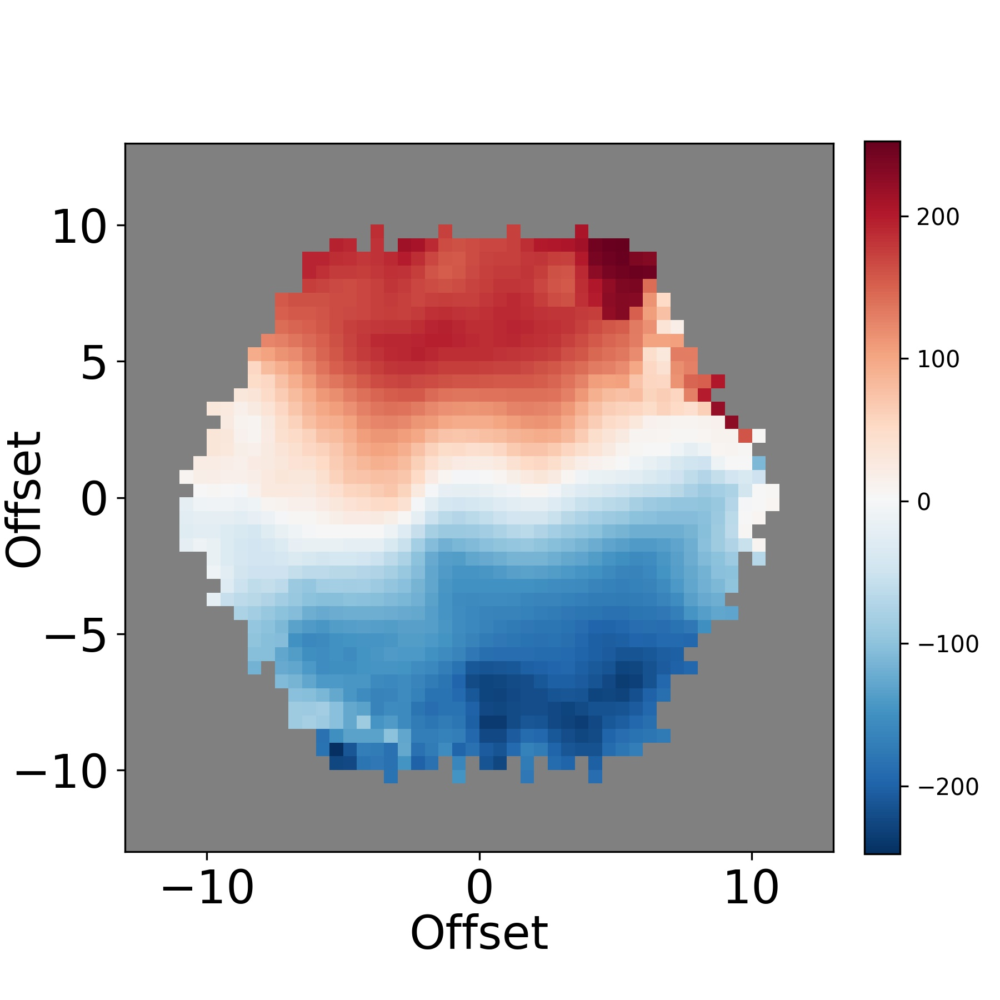
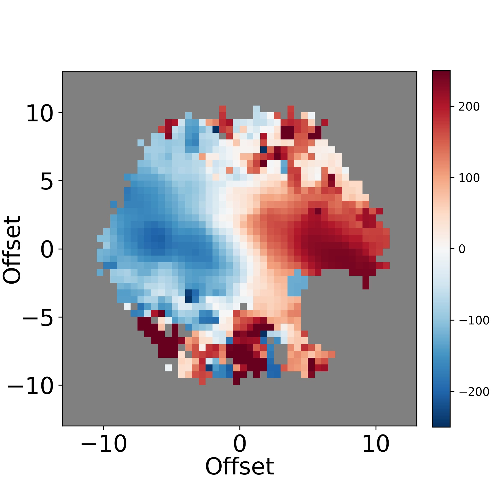

Direct Evidence of Shock Ionization in a Dusty Quasar: Sankar et al. 2025 (see also Wylezalek et al. 2022; Vayner et al. 2023a, 2023b)

Obscured quasars, such as F2M1106, offer critical insight into quasar feedback during key evolutionary stages—when powerful winds interact with the host galaxy’s environment (interstellar medium; ISM).
Shock ionization, traced by lines such as near-infrared [Fe II] emission, provide rare, direct evidence of these interactions, showing how quasar-driven outflows can heat, expel, or disrupt cold gas and potentially suppress star formation.
F2M1106, a red, radio-luminous quasar at z = 0.435, exhibits spatially resolved [Fe II] emission from JWST/NIRSpec data, positioning it as a valuable case study for feedback mechanisms and for validating analysis tools such as q3dfit.


These extended ionized gas emission features roughly align with the gas kinematic major axis, but show significant mis-alignment with the stellar kinematic axis. The spatially resolved gas velocity values reach high values, typically reaching a maximum of 300 km/s, which are greater than the stellar velocity values by a few factors. The ionized gas velocity maps (for the same galaxies as above) are shown below.


They also show high gas velocity dispersion, reaching ~ 220-250 km/s in distinct parts of the galaxies. They exhibit predominantly LINER or Seyfert type line ratios in the spatially resolved BPT diagram. Currenty, from the MaNGA Product Launch 9 (MPL-9) sample, we have 140 red geyser galaxies. For more detais on the sample, check out Cheung et al. 2016, Roy et al. 2018, Roy et al. 2021.